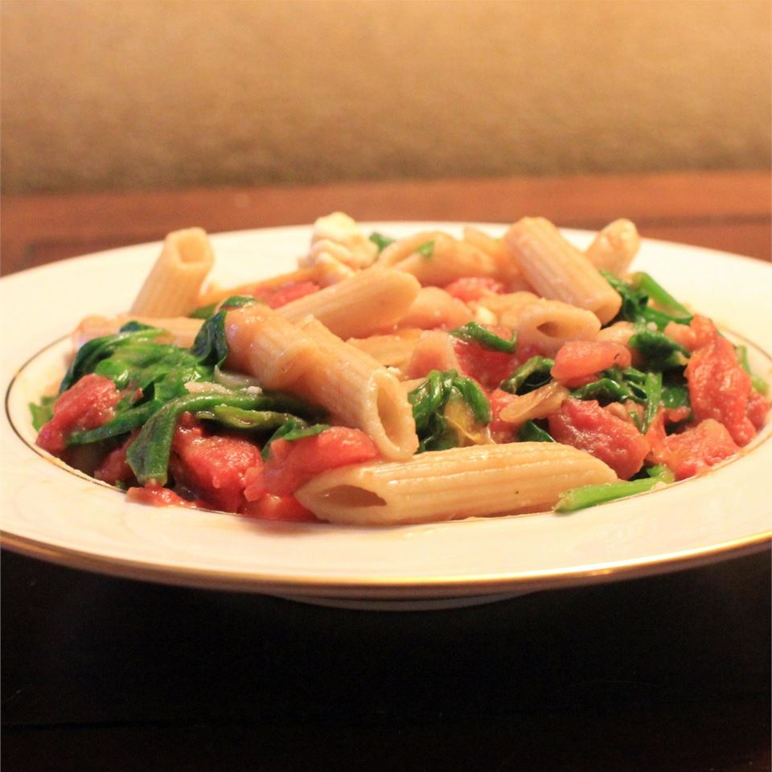

Greek Pasta with Tomatoes and White Beans

Description
An easy, quick, and tasty recipe. The flavors are wonderfully different as they are combined and meld together.
Ingredients
- 2 (14.5 ounce) cans Italian-style diced tomatoes
- 1 (19 ounce) can cannellini beans, drained and rinsed
- 10 ounces fresh spinach, washed and chopped
- 8 ounces penne pasta
- 1/2 cup crumbled feta cheese
Steps
- Cook the pasta in a large pot of boiling salted water until al dente.
- Meanwhile, combine tomatoes and beans in a large non-stick skillet. Bring to a boil over medium high heat. Reduce heat, and simmer 10 minutes.
- Add spinach to the sauce; cook for 2 minutes or until spinach wilts, stirring constantly.
- Serve sauce over pasta, and sprinkle with feta